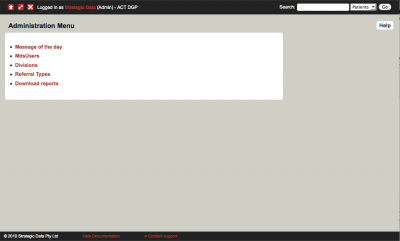
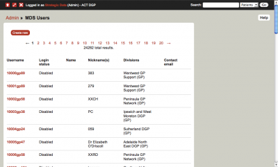
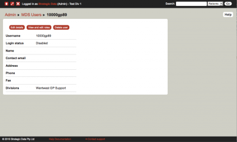
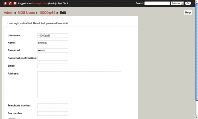
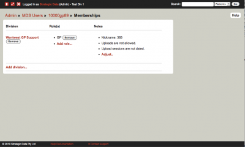

ATAPS Help - User Management
Levels of Access to the MDS
Since the upgrade of the MDS to version 4.1 (on 13th July 2011), different levels of access to the MDS have been introduced. This hierarchy is instrumental in assisting with the administration of access to the MDS.
By default, all users who had been granted access to the MDS via the traditional protocol (i.e., providing a letter of authority) prior to the MDS v4.1 upgrade, have been assigned the 'Division' level access to the MDS.
There are currently two levels for organisations to access the MDS:
- 'Division' level access - this is the highest level of access for users, and usually represents the organisations main MDS User. This allows you to create new and edit existing MDS user accounts for your organisation. To obtain access to the MDS with this level of access, you are required to proceed with the traditional process of arranging a letter of authority.
- 'Data Entry' level access - this level of access to the MDS does not allow you to manage MDS user accounts for your organisation. You do, however, have the ability to change the details associated with your MDS user account only e.g., Name, address, contact number, etc.). This can be done via the 'edit my details' link. To obtain access to the MDS with this level of access you simply need to request this from your organisation's main MDS user who will create your user ID.
Both levels can access your organisation's entire database to enter/upload, edit or download data.
NOTE: 'Administrator' level access is available only for Strategic Data and The University of Melbourne Users only.
Edit my details
All MDS users can edit their details associated with their user account. This includes: Name, address, contact number, etc. To access this function, click on the 'Edit My Details' link located on the homepage, update the required fields and then click on 'save'.
To manage User accounts for your organisation, from the MDS Home page select the ‘Manage Users’ link.
Create a new user
- from the MDS Home page select the ‘Manage Users’ link
- To create a new user, click on the ‘Create new user’ link. Fill in the form and click on the ‘Save’ button.
- You now need to assign a organisation to this user account (your organisation will be assigned by default, however, if you manage several organisations, you need to select the appropriate organisation for the new user account. To do this, click on ‘Add division’ and select from the scroll down menu.)
- Leave the ‘Nickname’ field blank.
- If you wish the new user to undertake bulk uploads to the MDS click on the ‘Upload allowed’ box. If this user will be manually entering data in the MDS via data entry, leave this box unchecked.
- Click on the ‘Save’ button when you have completed this form.
- NOTE: Usernames have a 20 character limit. There is no limit to the length of names and email addresses.
A new form will appear. Now click on the ‘Add role’ link.
'Division' roles - we advise that this role should belong to the MDS manager within your organisation. This type of account can manage (add/edit) all user accounts within your organisation.
‘Data Entry’ roles have the same level access as 'Division' except that they cannot manage (add/edit) user account for your organisation. Also, this level user cannot change the Outcome Measure settings for your PHN.
Both roles can view, edit, enter/upload data for your organisation.
Please contact the Help Desk (support@ataps-mds.com) if you require any other roles to be assigned.
Your new user is now ready for accessing the MDS. You can now issue the new Username and Password to your new user.
View List of all users for your organisation
- From the MDS Home page, click on the 'Manage users' link.
- Click on the 'List all users' link
Edit existing user accounts
- From the MDS Home page, click on the 'Manage users' link
- Click on the 'List all users' link
- Locate the user account you wish to edit and click on the 'view' link
- To edit user details (name, email address, contact details, username or password) click on the 'Edit details' button
- update the form and click on 'save'
- NOTE: The 'disable' button at the top of this form allows you to keep the user's details in tact but disabling their account. This is ideal when a user will not be requiring access to the MDS temporily, but will need to access it again in the future. To activate this account, simply locate the user details again, select 'edit details' and then save the record. This should automatically re-activate the account.
- To change the 'role', 'division' or enable data uploads, click on the 'View and edit roles' button.
- To delete a user click on the 'Delete user' button.
Note: The following instructions are for administrator users only.

To manage users, click on the settings icon  at the top left of every page (note: you will only see this icon if you are an administrator user). On the admin page, click "MdsUsers".
at the top left of every page (note: you will only see this icon if you are an administrator user). On the admin page, click "MdsUsers".

On the subsequent page is a list of all users you have administrative control over. Click on the username to be taken to the details page for that user.

To edit the username, name, password and contact details, click "Edit details". To view and edit the user's memberships/roles, click "View and edit roles".
 
Once on the "Memberships" page, you can add roles by clicking the "Add role" link, and edit the user's nickname per organisation and set upload preferences per organisation by clicking the "Adjust" link in the "Notes" section. To add a new organisation for the user, click "Add division".
To get back to the main page for the user at any time, click on their username in the heading of the page.
{kind=link}
{kind=link}
{kind=link}
{kind=link}
{kind=link}